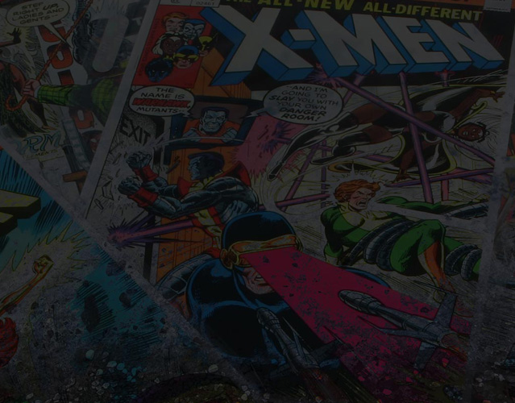

Loading...
Senior Frontend Web developer
Senior UX/UI designer
Welcome! I'm Douglas T. Angram, and I live in Cordova, Tennessee, a suburb of Memphis. I've provided frontend development and ux design for non-profit corporations and organizations, for-profit corporations, small businesses and volunteer projects. I have a passion for producing practical Web solutions. Check out my projects to see how I've satisfied my passion. Thank you for visiting!
My Projects
My Projects
-
Hero-Log
Deliverables:
React, Redux, Reactstrap, Node, Express, Sequelize, PostgreSQL, JWT, Form Validation, HTML5, CSS Modules, Material UI, UX DesignHero-Log
An application was needed to store comic book collections. The problem was that logging the collection in Excel or in notepads became too labor intensive. I researched the target audience to find out what their needs and issues. To solve the problem, I used React, Redux, Reactstrap, Material UI, HTML5, CSS Modules, JWT and localStorage to display the application. To allow the user to populate the database, I used Node, Express, Sequelize and PostgreSQL. Collectors can successfully store their collections.
 -
SCS Schools Pre-K
Deliverables:
HTML5, CSS3, Foundation, jQuery, Responsive, UX Design, ADA ComplianceSCS Schools Pre-K
The pre-k department wanted a better representation of their department. The issue was that the current site was not what the department leader wanted as their representation. I knew the site needed to be responsive and completely different from the current site. I used semantic HTML5, alt tags, title tags, adding proper contrast between the font and background and other techniques to make the Website ADA compliant. I used HTML5, CSS3, Foundation and jQuery to make the site responsive, improved user experience and functional.
-
SCS Spanish Hub
Deliverables:
jQuery, Responsive, HTML5, CSS3, Foundation Framework, PHP, MySQL, CMS, Database, ADA ComplianceSCS Spanish Hub
The department head needed a central page to store info for Hispanics. The Hispanic comminity wasn't able to find infor once it was removed from the district's homepage. A CMS was required so the Bilingual Communicator can adding all content. I used PHP for the CMS and MySQL for the database. To make the site responsive, I used HTML5, CSS3, jQuery and Foundation. For ADA Compliance, I added alt tags, gave the site a title, added title tags, made sure the text properly contrasted its background and added semantic HTML5. The Bilingual Communicator has been getting countless emails about people being very pleased with the Spanish Hub.
-
Robinson-Kyles
Deliverables:
UX Design, Google Map API, jQuery, Node, Gulp, Responsive, HTML5, CSS3, SASS, Foundation, Logo DesignRobinson-Kyles
A psychologist started a business. The issue was that the owner wanted a Web presence that would provide information about the business. I knew the site needed to be responsive and get high rankings on Google to gain site traffic. I used SEO, semantic HTML5, alt tags, title tags, meta keywords and a meta description. I made the site ADA compliant throught the SEO techniques and by adding proper contrast between the font and background. I used HTML5, CSS3 animation, SASS, Foundation and jQuery to make the site responsive, improved user experience and for functionality.
-
Online Music Player
Deliverables:
UX Design, AJAX, JSON, jQuery, Responsive, HTML5, CSS3, SASS, Foundation Framework, Node, GulpOnline Music Player
I wanted to listen to music and not be restricted to my phone. The problem was that with the new iPhones I couldn't listen to music and charge my phone simultaneously. Therefore, I decided to create an online music player. I used HTML5 and jQuery to add player controls and make them functional. I used CSS3, SASS and Foundation to style the player and make it responsive. I stored the songs in JSON and used AJAX to load the songs. Now I'm able to listen to my music online while charging my iPhone.
-
Music Resurrectus
Deliverables:
UX Design, Node, Gulp, LocalStorage, HTML5, CSS, SASS, Bootstrap, AJAX, JSON, jQuery, OOP JavaScriptMusic Resurrectus
There are a limited number of Internet radio stations that play classic Hip-Hop music. The ones that do, only play select songs repeatedly. My approach was to offer a service that would be very affordable and play a large variety of classic Hip-Hop. The station would also play Alternative Rock and Pop. I used Bootstrap, HTML5 and SASS to make the site responsive. I used localStorage for the signin and signup forms. I stored the songs in JSON and used AJAX to load the songs. I used OOP JavaScript programming for the site's functionality. This Website will be fully functional when it's connected to a database that will allow user to create their own playlists.
-
Music Trivia
Deliverables:
Node, Express, Sequelize, PostgreSQL, Form Validation, PugJS, HTML5, CSS3, SASS, Bootstrap, UX DesignMusic Trivia
The art of Music is becoming hard to find in today's songs. The issue is that today's artists are not being educated about music's history and how their predecessors executed music theory. Because of this, I wanted to make a quiz game about music. Users will create quizes that will educate the player about music. Form validation, Express, Sequelize, PostgreSQL were used to add users and create quizzes. PugJS template, HTML5, SASS, CSS3, jQuery and Bootstrap were used for UX and frontend functionality. With this app, functions as expected and will meet the needs of the user.
-
Comic Cellar
Deliverables:
Redesign, Javascript, Responsive, HTML5, CSS3Comic Cellar
The comic book store owner need a Website redesign. The issues was that he was receiving complaints from his costumers about how antiquated his Website was. My approach was to find out what his costumers needed and wanted, then build the site accordingly. I used Vanilla JavaScript, HTML5 and CSS3 to redesign and add frontend functionality.